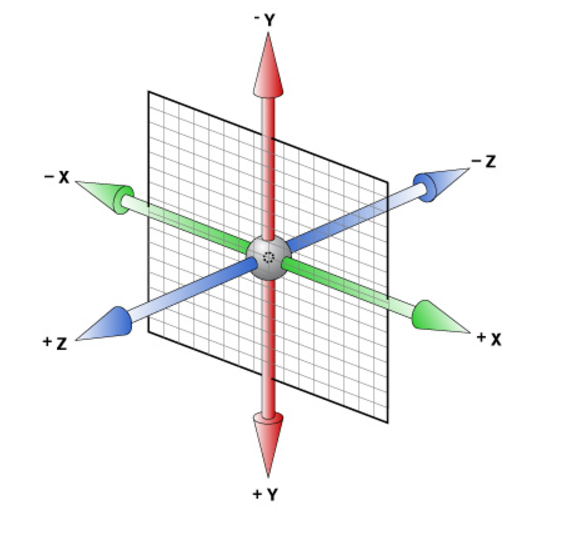
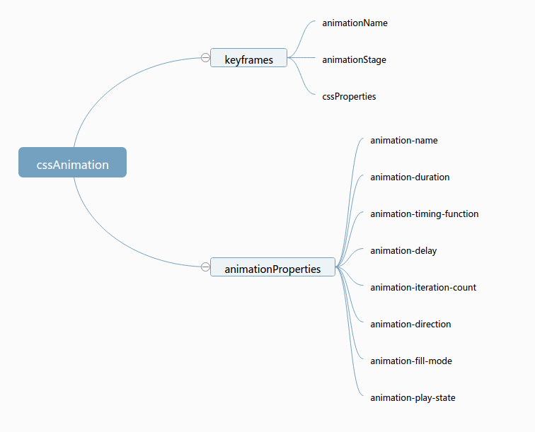

Created by Mike Zhang
感受Animation
Why Animation
分析维度
案例说明
参考文献
左右翻转
上下翻转
放大缩小
上下移动
css动画是使元素从一种样式逐渐变化为另一种样式的效果
人类的大脑总是关注移动的物体.因为人类有注意移动的物体这个自然的反应, 所以增加动画到网站或者APP中是一个吸引用户到产品的重要区域的强大方式, 并且可以增加用户的感兴趣程度.
它可以取代许多网页动画图像/Flash动画/javaScript,优化界面


2d空间是一个平面坐标系,包含X轴和Y轴,0点在屏幕左上角,X轴向右是正,Y轴向下是正,当用transform时,中心点变为屏幕中间; 二维空间动画是在X轴和Y轴方向上做的动画
translate()/ rotate()/ scale()/ skew()/ matrix()
3d相比于2d来说,多了一个z轴,这个方向默认是正对于屏幕
对于一个立方体来说,front是rotateX(0);back是rotateX(-180deg); right是rotateY(90deg);left是rotateY(-90deg); top是rotateX(90deg);bottom是rotateX(-90deg);
matrix3d(n,n,n,n,n,n, n,n,n,n,n,n,n,n,n,n)/ translate3d(x,y,z)/ translateX(x)/ translateY(y)/ translateZ(z)/ scale3d(x,y,z)/ scaleX(x)/ scaleY(y)/ scaleZ(z)/ rotate3d(x,y,z,angle)/ rotateX(angle)/ rotateY(angle)/ rotateZ(angle)/ perspective(n)
移动的糖豆
翻动的卡片
魔幻立方体